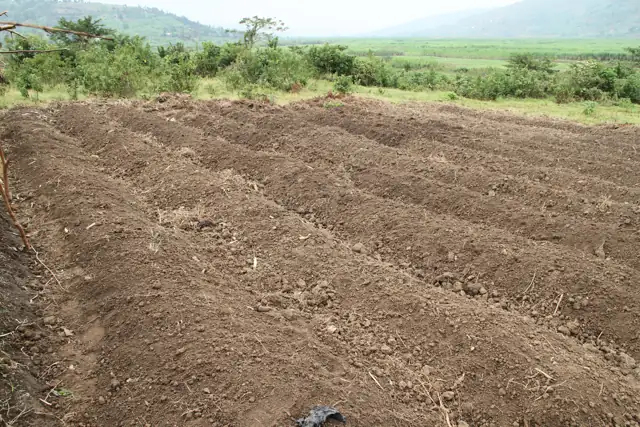
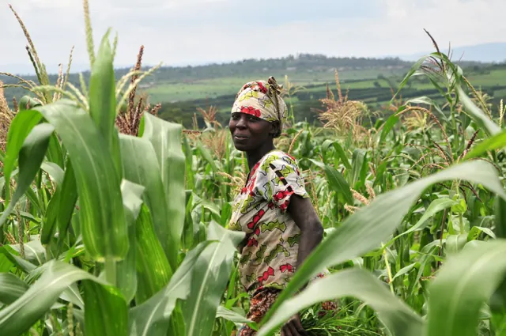
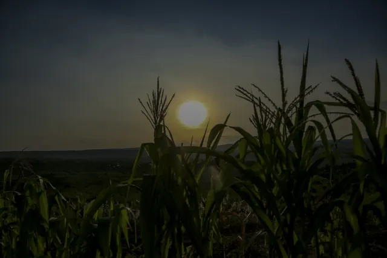
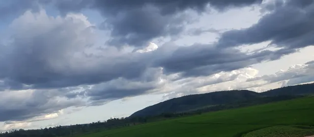
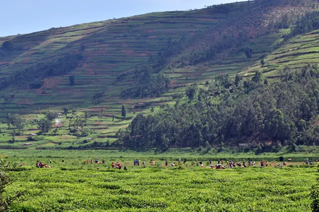
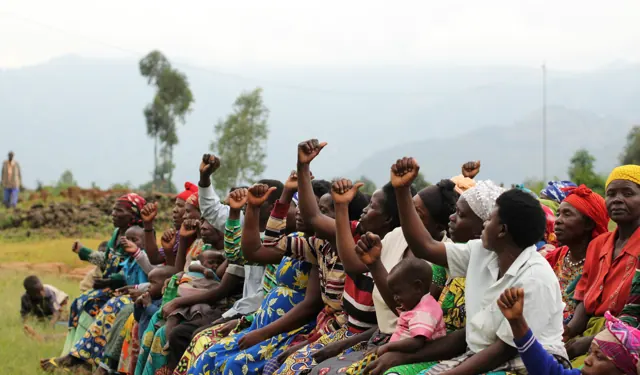
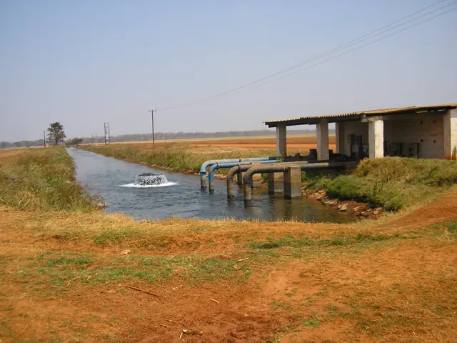
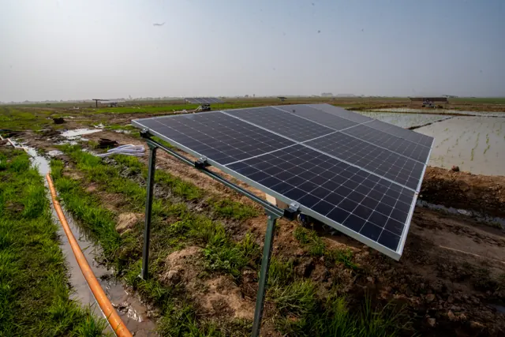

Farm outside of Kigali, Rwanda
Photograph by Baloona, 17 January 2011. Retained from an earlier page version.
PHOTOGRAPHY & CREDITS
These licensed photographs show agriculture and participation in Rwanda, Zambia and Nigeria. They are context images, not documentary photographs of CS-IRCFS participants, PADAB Mwesa or the APEFA pilot sites. Their use does not imply endorsement by the photographers or people pictured. No AI-generated people or invented project photographs are used.
Local derivatives are resized, compressed to WebP/JPEG, stripped of embedded metadata and cropped by page layouts. Each derivative remains under the original photograph’s license below. Source links provide the unmodified originals.

Photograph by Baloona, 17 January 2011. Retained from an earlier page version.

Photograph by Neil Palmer / CIAT, 10 November 2009. A farmer in Nyagatare, Eastern Province. Used in the citizen-science card.

Photograph by Peace Batuma, 19 May 2022. Retained from an earlier page version.

Photograph by Irakoze (Clronin7), 12 April 2020. Rice fields and clouds in Karongi. Retained from an earlier page version. This is not Mwesa Valley.

Neil Palmer / CIAT, 9 November 2009. Retained from an earlier page version; not CS-IRCFS participants.
Original and source record · CC BY-SA 2.0. Resized, recompressed and cropped for display; derivatives retain this license.

Bet240, 6 March 2018. A Spark community meeting in Rwanda.
Original source · CC BY-SA 4.0. Resized, recompressed to WebP and cropped for display; licensed derivatives retain their source license. Contextual use does not imply endorsement or project participation.

Wilhelm Hesse / Maxdrobot, 15 October 2005. Nampamba farm, Mpongwe, Zambia. Not PADAB or Bugesera.
Original source · Public domain. Resized, recompressed to WebP and cropped for display; licensed derivatives retain their source license. Contextual use does not imply endorsement or project participation.

Sani Maikatanga / SMMIMAGES, 1 March 2025. Solar irrigation equipment in Nigeria. Not APEFA or Bugesera.
Original source · CC BY-SA 4.0. Resized, recompressed to WebP and cropped for display; licensed derivatives retain their source license. Contextual use does not imply endorsement or project participation.
The dashboard preview is an actual capture of this application in its isolated, seeded test environment. All records are synthetic demonstration fixtures; no production or participant data is shown. The feature-phone walkthrough is an explicitly illustrative sequence based on the existing Kinyarwanda reporting menu; it does not submit reports or contact a provider.
The CS-IRCFS identity assets are reused from the existing repository. Manrope and DM Sans are served locally under their existing SIL Open Font License. Icons reuse the repository’s locally licensed Bootstrap Icons.

.jpg){kind=link}


.jpg){kind=link}